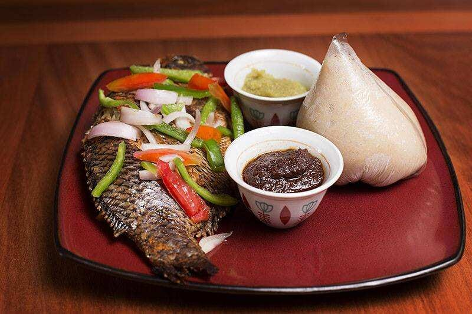

Banku

DESCRIPTION
A local ghanaian meal which is made from corn and cassava dough
INCRIDIENTS
- Corn dough
- Cassava dough
- Water
- Salt
STEPS
- Mix the cassava and corn throughly in the same proportion
- Remove any lumps in it in other to make have a good texture
- Place it on any form heat and stair continuously
- The more ticker it becomes add water till you get it the way you want